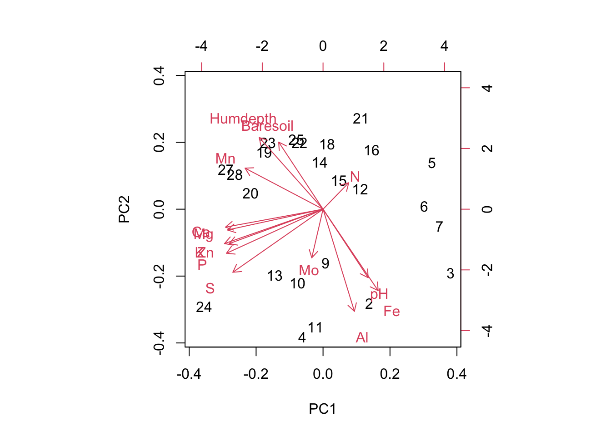
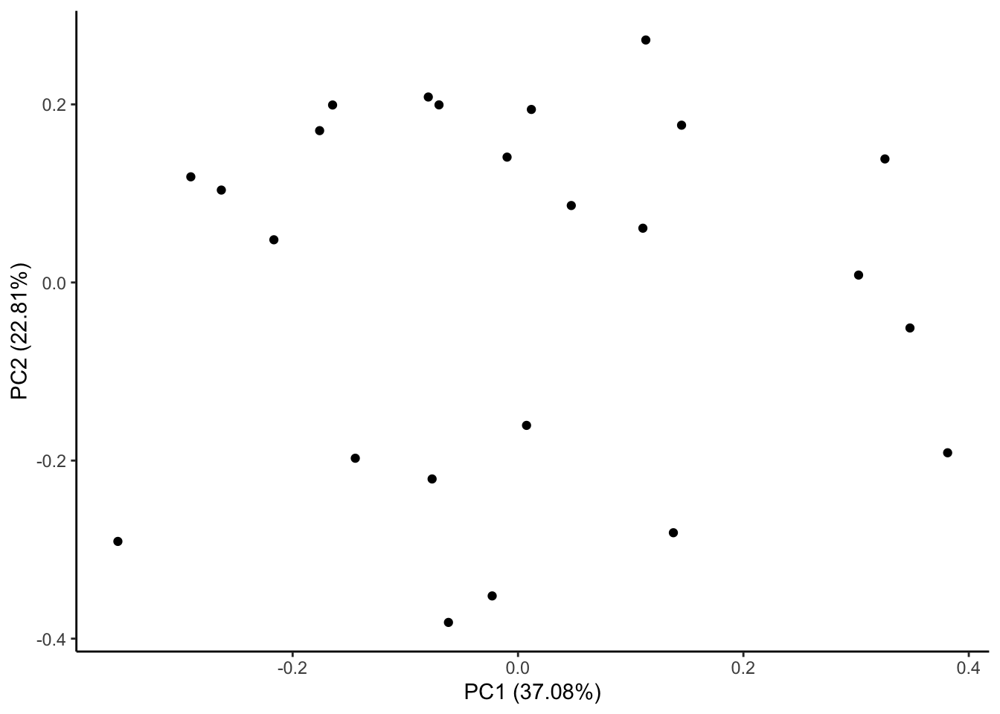

Learn conceptual theory behind common multivariate techniques
Learn how to run and interpret the output from PCA and PCoA
Learn how to assess multicollinearity
Be able to apply the above techniques on real-world data
Your types of data and biological questions drive your types of statistical analysis
Recognize that the choices required in a statistical pipeline can drastically affect your results, but there is no one right way of analyzing your data
13.0.2 Lesson outline
Examples of multivariate statistics using well-behaved data: PCA and PCoA
Discuss caveats and analytically choices embedded in PCA and PCoA
Work through multivariate analysis of soil invasion data!
13.0.3 Required packages
tidyverse
car
ggfortify
wesanderson
vegan
14 Multivariate Statistics
14.1 Lesson intro
Most things in the natural world are inter-related and correlated, where many trends and observations tend to change in a predictable way together. This is personally one of the things that I find exciting about biology–the sheer complexity of interactions in natural systems.
But this also makes our lives as scientists challenging, because we then have to distill, what is sometimes called a “causal soup”, into variables of interest and then figure out a meaningful analysis that can tease apart which effects came from where.
And this is where it gets complicated—how do we accurately represent the true complex and multidimensional nature of ecological systems without breaking our brains?
Cue multivariate statistics.
We use multivariate techniques to reduce complex situations into more manageable ones and to deal with the fact that patterns are correlated with other patterns, which are in turn driven by a number of interacting ecological processes.
Up until now we’ve been working with univariate methods – when there is a single response variable is of interest, or when we have multiple predictors but we are mostly interested in their independent effects on the response.
In contrast, multivariate statistics is a family of statistical tools used to to handle situations where the predictor and/or the response variables come in sets, allowing us to distill through some of that correlated (and sometimes redundant) information and to analyze these variables simultaneously, as they should be.
Unfortunately (?), it is not within the scope of this class (or even this course!) to teach all of this. Multivariate statistics area large discipline in their own right. They are a flexible tool with a lot of variations - which can make it challenging to choose the correct technique for an analysis.
Today, we will focus on a couple of the most common techniques that you are likely to come across in the papers you read and/or use in your own work. This is a quick overview and we necessarily have to have to skip over some of the details—if want to know more or have a specific question related to data, we are happy provide readings or to chat during office hours.
Multivariate statistics roughly split into unconstrained vs constrained ordination techniques.
Unconstrained ordinations have no a priori groupings or relationships in the variables or observations. Common examples include: PCA, PCoA, cluster analysis, correspondence analysis (CA), factor analysis and NMDS. We will focus on this broad category today.
Constrained ordinations specify a priori groupings. Examples include discriminant analysis, canonical variate analysis, canonical correlation analysis, and redundancy analysis.
Unconstrained ordinations generally work by the extraction of the eigenvectors of an association matrix. For example, imagine your data containing n objects and p variables. The n objects can be represented as a cluster of points in the p-dimensional space. This cluster is generally not spheroid: it is elongated in some directions and flattened in others. These directions are not necessarily aligned with a single dimension (= a single variable) of the multidimensional space.
The direction where the cluster is most elongated corresponds to the direction of largest variance of the cluster and this is the first axis that an ordination will extract. The next axis to be extracted is the second most important in variance, provided that it is orthogonal (linearly independent, uncorrelated) to the first one.
The process continues until all axes have been computed. When there are a few major structures in the data (gradients or groups) and the method has been efficient at extracting them, then the few first axes contain most of the useful information, i.e. they have extracted most of the variance of the data. In that case, the distances among sites in the projection in reduced space are relatively similar to the distances among objects in the multidimensional space.
How the methods do this specifically varies and depends on the types of data and specific methods you are using.
For more details see this chapter in Borcard, D., Gillet, F. and Legendre, P. 2011. Numerical Ecology with R.
14.2 Let’s practice: toy example
For this section we will be using soil chemistry data from the vegan library.
'data.frame': 24 obs. of 14 variables:
$ N : num 19.8 13.4 20.2 20.6 23.8 22.8 26.6 24.2 29.8 28.1 ...
$ P : num 42.1 39.1 67.7 60.8 54.5 40.9 36.7 31 73.5 40.5 ...
$ K : num 140 167 207 234 181 ...
$ Ca : num 519 357 973 834 777 ...
$ Mg : num 90 70.7 209.1 127.2 125.8 ...
$ S : num 32.3 35.2 58.1 40.7 39.5 40.8 33.8 27.1 42.5 60.2 ...
$ Al : num 39 88.1 138 15.4 24.2 ...
$ Fe : num 40.9 39 35.4 4.4 3 ...
$ Mn : num 58.1 52.4 32.1 132 50.1 ...
$ Zn : num 4.5 5.4 16.8 10.7 6.6 9.1 7.4 5.2 9.3 9.1 ...
$ Mo : num 0.3 0.3 0.8 0.2 0.3 0.4 0.3 0.3 0.3 0.5 ...
$ Baresoil: num 43.9 23.6 21.2 18.7 46 40.5 23 29.8 17.6 29.9 ...
$ Humdepth: num 2.2 2.2 2 2.9 3 3.8 2.8 2 3 2.2 ...
$ pH : num 2.7 2.8 3 2.8 2.7 2.7 2.8 2.8 2.8 2.8 ...
This data frame is composed of 24 rows that correspond to different sites and 14 columns, which correspond to the different chemicals measured at each site.
14.2.1 A note on distance matrices
Many multivariate methods rely on being able to represent your observations as being more or less similar to each other (similarities or distances). This makes, because if you’re trying to group observations by variance along an axis, you need to know how far apart each observation is from other observations.
This is easy to do (and visualize) with quantitative data—a distance is just the numeric difference between the observations along an axis. To deal with negative numbers and multiple dimensions, rather than subtracting one value the other, we instead compute euclidean distances.
For visualization, let’s compute the euclidean distances between the first four soil chemicals. We will use the vegdist function in vegan.vegdist is handy because it allows us to specify which type of distance matrix we want to use.
?vegdist# let's just look at the first columneuclidean.distance <-vegdist(varechem[, 1:4], method="euclidean") # lets see it euclidean.distance
Note that the output here is an object of class “distance” that shows all the pairwise euclidean distances between all cells in the data.
Thinking about distances are more challenging to do if you have some data that is categorical (what is the similarity along an axis of apples to oranges?). Luckily there are different types of distance matrices that can handle different types of data.
Another really common type of distance matrix is the Gower distance, which can handle categorical and mixed data, and so is very useful. For more detail on distance matrices read this.
Okay, now we’re ready to do some statistics!!
14.2.2 PCA
One of the most common (unconstrained) ordination techniques used in EEB is the Principle components analysis (PCA). A PCA seeks to find a new coordinate system (PC axes) that best accounts for the variation in a multivariate data space, thus reducing dimensionality in the process but still accounting for as much of the original variation as possible. Critically, a PCA assumes a linear relationship between your variables, can only take quantitative data, and requires more rows than columns in the data itself.
The procedure to conduct a PCA is as follows:
Imagine a 14-dimensional object with each of our soil measurements as an axis (k=14).
Plot our sites (n=24) in this 14-D space, and then find the Euclidean distance between those points (do not despair, R will do the actual calculations for us).
Let’s visualize this (but in less dimensions because we are human). One way to do this is with a pairs plot in base R, which plots the relationships between all variables (columns) as a scatter plot.
pairs(varechem[, 1:4]) #only the first 4 columns for simplicity
Which pairs of chemicals are tightly related to each other? Which are not closely related?
After you have the distances between points, we can use procedures that are similar (in concept) to least squares to find a “best-fit line” through our data points in multidimensional space (again, R will take care of all this). This will be our first principle component (PC) axis and it explains the most variance in our data.
Find another best-fit line through the data under the condition that it has to be orthogonal to the first axes (i.e., at a 90° angle, meaning that these two axes are as unrelated to each other as possible). This will be our second PC axis. See here for visual PCA axis.
This process continues until we have k PC axes.
Okay, let’s work through some of the details in an example.
We will use the function prcomp. At its most basic, prcomp takes your data and then you specify if you want to scale = TRUE/FALSE. The scale command specifies whether you want to run the pca on a correlation matrix or a covariance matrix. This sounds complex but it boils down to a simple idea. Choosing scale = TRUE means you are selecting a correlation matrix which standardizes your data to have unit variance ie puts all your variables on the same scale. Choose this option if your data contains multiple types of units.
varechem.pca <-prcomp(varechem, scale. =TRUE)
Phew, that wasn’t too bad. Let’s take a look at our varechem.pca object
summary(varechem.pca) # this is ugly becuase of the linebreaks, look at in console, it's easier
This gives us a table summary of variance explained by each axes. R even did the math for us and showed cumulative variance explained as we move to the higher dimensions, so convenient! We see that the first two PC axes already explained close to 60% of the variation of the data. But it doesn’t give us any information about our variables or sites!
Let’s have a look at this object in another way.
str(varechem.pca)
List of 5
$ sdev : num [1:14] 2.278 1.787 1.298 1.034 0.903 ...
$ rotation: num [1:14, 1:14] 0.0946 -0.3559 -0.3632 -0.3598 -0.3523 ...
..- attr(*, "dimnames")=List of 2
.. ..$ : chr [1:14] "N" "P" "K" "Ca" ...
.. ..$ : chr [1:14] "PC1" "PC2" "PC3" "PC4" ...
$ center : Named num [1:14] 22.4 45.1 162.9 569.7 87.5 ...
..- attr(*, "names")= chr [1:14] "N" "P" "K" "Ca" ...
$ scale : Named num [1:14] 5.53 14.95 64.84 243.58 41.01 ...
..- attr(*, "names")= chr [1:14] "N" "P" "K" "Ca" ...
$ x : num [1:24, 1:14] 0.132 0.528 -3.963 -3.241 -1.837 ...
..- attr(*, "dimnames")=List of 2
.. ..$ : chr [1:24] "18" "15" "24" "27" ...
.. ..$ : chr [1:14] "PC1" "PC2" "PC3" "PC4" ...
- attr(*, "class")= chr "prcomp"
We see that this object is structured as a five-item list. We mostly care about two of these items:
Loadings – appropriately named rotation.
Site scores – lazily named x.
To extract items from a list, use the $ notation.
varechem.pca$x # this gives us the particular location (ie the coordinates) of each of our sites in the multidimensional space formed by the PC axes
varechem.pca$rotation # this tells us which of our soil chemicals are contributing most strongly to each PC axis (ie which variables are being summarized by each newly created PC axis)
We can interpret these outputs directly, specifically the rotations.
varechem.pca$rotation[ ,1:4] # let's just look examine the first 4 PC axes
PC1 PC2 PC3 PC4
N 0.09462709 0.12435859 -0.16204826 0.79318367
P -0.35589258 -0.20731069 0.09086948 0.08242977
K -0.36318854 -0.16172669 -0.04259682 0.21401371
Ca -0.35975485 -0.08457237 0.32644437 -0.01826328
Mg -0.35228219 -0.09776116 0.08467641 -0.03784222
S -0.33246862 -0.29668916 -0.21512714 -0.01410909
Al 0.11552207 -0.48048232 -0.26540100 0.07767669
Fe 0.20299687 -0.38301396 -0.15691339 0.31769008
Mn -0.28756460 0.19318776 0.08921960 0.37885343
Zn -0.34603172 -0.16198093 0.04178581 -0.05229606
Mo -0.04154531 -0.22863241 -0.58319905 -0.23286801
Baresoil -0.16349721 0.31570370 -0.27274616 -0.06312303
Humdepth -0.23531857 0.33736134 -0.28352933 0.02541797
pH 0.16613845 -0.32216601 0.45164891 0.06492250
The way we interpret this is by looking, within each PC axis, for the variables that have the largest absolute values. These are the variables that are contributing variation to this axis.
For example, PC1 sets up an axis of increasing concentrations of P, K, Ca, Mg, S, Zn. PC2 is driven largely by Al, Baresoil, Humdepth and pH. Note that the positive and negative numbers indicate a positive and negative relationship (eg along PC1 P and Fe are negatively correlated, sites that have high P tend to have low Fe and vice versa).
This is much, much easier to see visually. We can do this with the base R function biplot, which is a bit ugly.
biplot(varechem.pca)

On this figure, there are 2 sets of information. Each site is plotted (these are the numbers). As well, the variable loadings are represented as arrows and tell us how each variable is contributing to each axis. The clustering of sites along the axes (and rotations) tell us which sites are similar in terms of their chemical composition. Eg, we can see that sites 19, 20, 27 and 28 all have a similar chemical composition. We can also see clearly that along PC2 sites with low pH also tend to have low Al, while they have high Humdepth, Baresoil and Mn. Future analyses might relate the soil characteristics of these sites to other environmental data (history of land use, pollution etc)
We can do this with the function autoplot in the ggfortify package, which takes advantage of ggplot style plotting.
autoplot(varechem.pca) +theme_classic()

The simplest version of autoplot displays less information than our biplot function. On this figure we can see that we are plotting PC1 by PC2 and each point on the figure is each of the rows aka sites in our data. autoplot handily also shows us the proportion of variance explained by each of these PC axes. Now lets add the loadings.
# Remember to tell R where the original data is coming from! # Also, `autoplot` will refuse to understand you if you spell "colour" the non-Canadian wayautoplot(varechem.pca, loadings=TRUE, loadings.label=TRUE, loadings.colour="grey30", data=varechem) +theme_classic()
But do we make biplot for each of our PC axes??? Nope, this would take too long and each subsequent axis explains less of the variation in our data… ie it becomes less important. As well, we often perform PCA to simplify our data from many variables to few.
So the next step is to pick how many axes show meaningful information.
We can do this with a scree plot. This shows us the amount of variation explained by each axis. As we know, each axis explains subsequently less variation. We use scree plots to help us determine at which point the axes stop adding much new information. We can do this visually or quantitatively. We will just go over the visual method as determining which axes to keep is pretty subjective and depends on your system and question of interest.
plot(varechem.pca)
Each bar is a PC axis, starting from PC 1. In a scree plot, what you want to look for is a big jump between subsequent axes. Its subjective, but based on this scree plot I would probably be inclined to keep the first 2 or 3 PC axes. As well, we can look at the cumulative proportion of explained variance:
And we can see that by PC3 we have explained ~72% of the variation in the data, which is not bad (not great either, but not bad). By the time we get to PC4, each individual axis is explaining less than 10% of variation in the data, so adding them, and conversely excluding them, isn’t going to have a large effect.
*Note 1: there are many functions across many libraries for running a pca: prcomp, princomp, rda, dudi.rda. Each method makes a slightly different choice about how the underlying math is performed. prcomp and rda are both very common choices.
*Note 2: for those of you working with phylogenetic data: you may want to perform a phylogenetic PCA (pPCA). The function phyl.pca is available in package phytools.
A PCoA (principal coordinates analysis) is a more flexible form of a PCA that can take any type of distance matrix. Remember that distance matrices allow you to express differences between your data points so by specifying the type of distance matrix, so this means that PCoA can handle a mix of data types—which is very handy if you have both categorical and numeric data. Note that your choice of distance matrix can have a large effect on the conclusions you draw in your analysis–make sure to read the literature and learn what best practices there are for you specific data types.
You interpret the output of a PCoA the same way as a PCA. Common functions are cmdscale in base R, wcmdscale in vegan, and pcoa in ape.
In sum, both PCA and PCoA preserve the distances between your data points–for this reason they are commonly called “rotations”–these methods do not change the underlying relationships in your data, they just group variation in data across many dimensions and then make a nice tidy output that our brain’s can interpret.
14.3 Let’s practice: real life example
For this section of the class, we will try to apply what we’ve learned above on a real world data set. We’ll be walking through the analysis and the choices we make and then at each section, I will give you a minute or so to try and either a. shout out the answer or b. write the code.
We are working with a cool dataset that was collected by Vicki as part of her PhD work outside of Churchill, Manitoba. Vicki generally studies invasive species in the tundra and the data we are working with today is part of a larger project that investigates the effect of soil on plant invasions.
The key question we are trying to answer today is if soil chemicals, which we expect to vary across a landscape according to human presence and land use, can predict whether or not invasive species are present.
Let’s read in our data and take a look at it!
soil.data <-read_csv("soil.data.csv")
Rows: 28 Columns: 11
── Column specification ────────────────────────────────────────────────────────
Delimiter: ","
chr (4): sample_id, invaded_status, location, notes
dbl (7): site_number, latitude, longitude, P, C, N, avg_pH
ℹ Use `spec()` to retrieve the full column specification for this data.
ℹ Specify the column types or set `show_col_types = FALSE` to quiet this message.
head(soil.data)
# A tibble: 6 × 11
sample_id site_number invaded_status location latitude longitude P C
<chr> <dbl> <chr> <chr> <dbl> <dbl> <dbl> <dbl>
1 1A 1 invaded town 58.8 -94.2 95.2 9.92
2 1B 1 uninvaded town 58.8 -94.2 42.4 5.47
3 6A 2 invaded town 58.8 -94.2 4.63 2.22
4 6B 2 uninvaded town 58.8 -94.2 8.31 1.74
5 7A 3 invaded town 58.8 -94.2 33.6 5.49
6 7B 3 uninvaded town 58.8 -94.2 77.2 4.93
# ℹ 3 more variables: N <dbl>, avg_pH <dbl>, notes <chr>
Okay, so in this data, we have columns that contain our environmental data: the concentration of various chemicals in the soil, if there are invasive species (categorical, two levels, invaded/uninvaded), and then a bunch of spatial information that relates each site to a broader geographic region ( 3 levels, town, airport, CNSC). We may expect that each of these broader regions will have a particular soil chemical composition, which then should (according to our question) affect the presence of invasive species.
More formally then, we are testing for a relationship between location, P, C, N, and avg_pH (our explanatory variables) and invaded_status (our response variable).
Before we get started, let’s do some data organization.
# convert response into 1s and 0ssoil.data$binary.invaded_status <-ifelse(soil.data$invaded_status=="invaded", 1, 0)# make sure that location is a factorsoil.data$location <-as.factor(soil.data$location)
14.3.1 Multicollinearity
The first thing we need to do is assess the relationships between our explanatory variables (location, P, C, N, avg_pH) and check for multicollinearity.
Multicollinearity refers to a situation in which two or more explanatory variables are highly linearly related (See here for a mathematical explanation). This can wreck havoc in an analysis because collinear predictors generate unstable and unreliable regression coefficients that have large standard errors.
So the first step in this analysis is to visualize all our environmental data and assess whether any variables are highly correlated with each other (ie are collinear).
14.3.1.1 Correlations
There are a couple of ways of assessing collinearity of our predictor variables. One common way you may have heard of is to calculate the correlation between the variables. We do this using cor and can visualize the relationships using pairs. Note that this method only works for numeric data (ie it can’t handle categorical variables).
pairs(soil.data[,7:10])
cor(soil.data[,7:10])
P C N avg_pH
P 1.0000000 0.5090295 0.6482000 -0.4091076
C 0.5090295 1.0000000 0.9086144 -0.4722516
N 0.6482000 0.9086144 1.0000000 -0.5681717
avg_pH -0.4091076 -0.4722516 -0.5681717 1.0000000
We can see from this that C and N are highly related. When we look at the correlations, this linked relationship is confirmed. As a rule of thumb, ecologists generally report an r>=0.70 as being collinear. Note that this threshold is a bit arbitrary and different sub-disciplines have different traditions.
Based off this output, we could choose to drop either C or N from the analysis as they will explain similar variation in the data. Generally, we would choose to drop whichever variable we were less interested in scientifically.
14.3.1.2 VIF = Variance Inflation Factor
The other common way of assessing collinearity is with the VIF. This method can handle both categorical and numeric data.
The VIF is calculated for each predictor by doing a linear regression of that predictor on all the other predictors, and then obtaining the R2 from that regression. The VIF is just 1/(1-R2). This is why it’s called the variance inflation factor - it estimates how much the variance of a coefficient is “inflated” due to linear dependence with other predictors.
VIF’s start at 1 and have no upper limit. In general:
VIF = 1 means no correlation between predictor and any other predictor variables in model
1 < VIF < 5 suggests moderate collinearity
VIF > 5 means severe collinearity
Note that there are some cases in which high VIF values can be ignored, for example for polynomial terms (see here for a detailed discussion).
VIF is used on model rather than on the raw predictors. So let’s fit our model and include location (town vs airport) and see if any of our predictors are collinear. A VIF above 3 (or also commonly 5) indicate high collinearity.
Note that for 28 observations this model is also very over fit (too many predictor terms to get general model parameters), but let’s ignore that for now.
model_collinear <-glm(binary.invaded_status ~ location + P + C + N + avg_pH, data=soil.data, family="binomial")car::vif(model_collinear)
GVIF Df GVIF^(1/(2*Df))
location 1.466368 2 1.100426
P 2.441326 1 1.562474
C 5.081174 1 2.254146
N 8.102951 1 2.846568
avg_pH 1.462175 1 1.209204
We have multiple levels in our categorical predictor (airport/town/CNSC) and so we are returning GVIF which are produce better estimates when the degrees of freedom > 1. We interpret GVIF the same was as VIF and apply the same rule of thumb.
Which variables are collinear? Does this match our conclusion from using cor() above?
Just as above, we can see the C and N are collinear and have a high VIF. Generally, best practice is to drop the term with the highest VIF and rerun, and keep going, dropping terms until all VIF are below the threshold for collinearity.
model_collinear_dropN <-glm(binary.invaded_status ~ location + P + C + avg_pH, data=soil.data, family="binomial")vif(model_collinear_dropN)
GVIF Df GVIF^(1/(2*Df))
location 1.315957 2 1.071052
P 1.964871 1 1.401739
C 1.635915 1 1.279029
avg_pH 1.306870 1 1.143184
How does VIF change if drop N? How does the output change? What can we conclude from this?
Note that dropping variables due to collinearity isn’t p-hacking. In your methods, you would report all the predictors and your method of checking for collinearity, and what threshold you use, and which variables you exclude.
Okay, so what happens though if N is actually our variable of interest and we’ve just gotten rid of it from the model??? Do we panic??
No! Luckily we’ve just learned about multivariate techniques for grouping correlated data into common axes of variation.
14.3.1.3 PCA
Which method might we use on this data?
PCA is also useful in this case for exploring how these different soil measurements are organized across sites.
# make sure to select columns that you want to include in the PCA!pca.soil <-prcomp(soil.data[, c(7:10)], scale. =TRUE) # use corr bc multiple units
Now let’s look at the output.
# look at importance of componentsplot(pca.soil)
How many axes should we keep?
# let's look at loadingspca.soil$rotation
PC1 PC2 PC3 PC4
P -0.4561476 0.3487729 -0.8033374 0.1579108
C -0.5326177 0.2372107 0.5269634 0.6183519
N -0.5713178 0.1657433 0.2459331 -0.7652725
avg_pH 0.4264314 0.8914133 0.1283571 -0.0840417
So how would we interpret this? Let’s start with PC1.
Now let’s visualize, it’ll be much easier to interpret! We’re just going to use autoplot here, but remember the base plot function biplot also works.
autoplot(pca.soil, loadings=TRUE, loadings.label=TRUE, loadings.colour ="grey30", # changes the colour of the arrowsdata = soil.data, colour="location", # colour obs by locationloadings.label.hjust =1.2) +# moves loading labels so easier to readtheme_classic() +# make fancier (removes box)scale_color_manual(values=wes_palette("FantasticFox1", n =3)) # pretty colours!
What jumps out to you about this figure? What are some of the things this tells us?
PC1 explains most of variation and is doing most of heavy lifting
P, C, and N are all highly correlated together (arrows of similar length and pointing in same direction)
pH is relatively uncorrelated (orthogonal to P, C, N)
P, C, N load strongly on PC1, setting up an axis of more to less concentration
pH loads mostly (but not exclusively) on PC2
If you squint maybe the different locations are grouped in PC space… but more likely it looks like location doesn’t explain where the data (sites) fall out in relation to P, C, N, and pH (ah well, this is what happens when we work with real data!)
Let’s run our same logistic model again to test if soil characteristics explain the relationship between if a site and invasive species or not. This time, instead of using all the soil data, we will use PC axes.
But first, some (more) data organization.
# see each observation and it's location along PC axespca.soil$x
# bind the observations to the data, note that `R` keeps everything in the same order, so this is easysoil.data$PC1 <- pca.soil$x[ ,1] # pull PC1soil.data$PC2 <- pca.soil$x[ ,2] # pull PC2head(soil.data)
# A tibble: 6 × 14
sample_id site_number invaded_status location latitude longitude P C
<chr> <dbl> <chr> <fct> <dbl> <dbl> <dbl> <dbl>
1 1A 1 invaded town 58.8 -94.2 95.2 9.92
2 1B 1 uninvaded town 58.8 -94.2 42.4 5.47
3 6A 2 invaded town 58.8 -94.2 4.63 2.22
4 6B 2 uninvaded town 58.8 -94.2 8.31 1.74
5 7A 3 invaded town 58.8 -94.2 33.6 5.49
6 7B 3 uninvaded town 58.8 -94.2 77.2 4.93
# ℹ 6 more variables: N <dbl>, avg_pH <dbl>, notes <chr>,
# binary.invaded_status <dbl>, PC1 <dbl>, PC2 <dbl>
14.3.1.4 Modelling
Okay, now let’s run the model.
model_PCA <-glm(binary.invaded_status ~ location + PC1, data = soil.data, family ="binomial")vif(model_PCA) # nice, this is what we want to see
Call:
glm(formula = binary.invaded_status ~ location + PC1, family = "binomial",
data = soil.data)
Deviance Residuals:
Min 1Q Median 3Q Max
-1.4490 -1.1062 -0.1187 1.1441 1.5497
Coefficients:
Estimate Std. Error z value Pr(>|z|)
(Intercept) -0.1850 0.6195 -0.299 0.765
locationCNSC 0.4488 1.2323 0.364 0.716
locationtown 0.2988 0.8845 0.338 0.736
PC1 -0.3401 0.2685 -1.267 0.205
(Dispersion parameter for binomial family taken to be 1)
Null deviance: 38.816 on 27 degrees of freedom
Residual deviance: 37.037 on 24 degrees of freedom
AIC: 45.037
Number of Fisher Scoring iterations: 4
Ah well, it looks like there’s no relationship between soil characteristics and invasion.
We can actually see this very clearly if we just plot our data.


{kind=link}